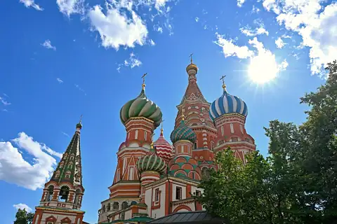
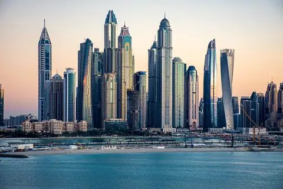
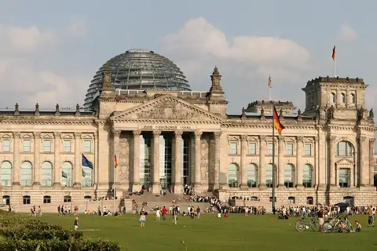
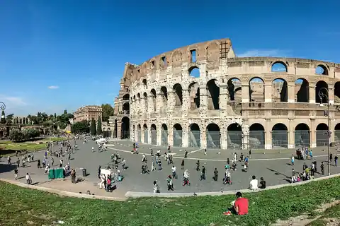
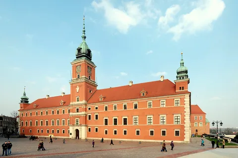
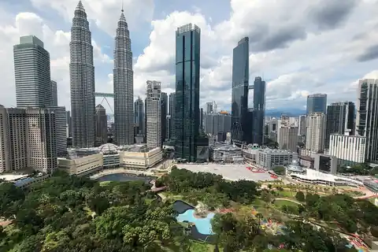
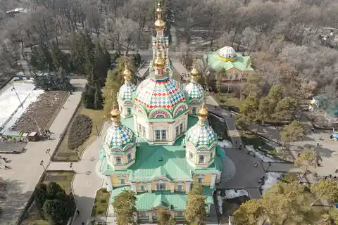
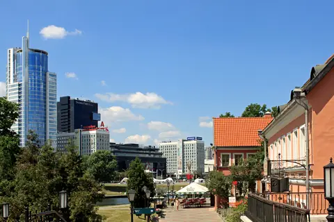

Рабочая виза
Официальная работа за рубежом
Для официальной работы за рубежом. Приводим приглашение, договор и документы о квалификации в соответствие с требованиями.
ПодробнееВизовый центр в Ашхабаде
Готовим документы на рабочие, учебные, туристические, гостевые и деловые визы и сопровождаем вас на каждом этапе.
Первая консультация бесплатная
Наши услуги
У каждого типа визы свои требования. Какой нужен именно вам, определим вместе на консультации.
Официальная работа за рубежом
Для официальной работы за рубежом. Приводим приглашение, договор и документы о квалификации в соответствие с требованиями.
ПодробнееУниверситет, колледж, языковые курсы
Для учёбы в университете, колледже или на языковых курсах. Работаем с письмом о зачислении, подтверждением финансов и переводами.
ПодробнееОтдых и путешествия
Для отдыха и путешествий. Собираем маршрут, бронь жилья и страховку в единый комплект.
ПодробнееПоездка к родным и друзьям
Для поездки к родственникам или друзьям. Оформляем приглашение и документы, подтверждающие родство или знакомство.
ПодробнееПереговоры, выставки, командировки
Для переговоров, выставок и командировок. Готовим приглашение компании и документы, подтверждающие деловую цель поездки.
ПодробнееОт выбора вуза до подачи документов
От выбора зарубежного вуза до подачи документов. Консультируем по направлению, бюджету и языковым требованиям.
ПодробнееКак мы работаем
Пять этапов. Вы заранее знаете, что происходит на каждом.
Разбираем цель поездки и говорим, какая виза вам нужна.
Открыто говорим о сильных и слабых местах ваших документов.
Список, анкета, переводы и справки — всё по требованиям.
Записываем в консульство и готовим ко дню подачи.
Забираем результат вместе, при отказе готовим повторную подачу.
Наш подход
Мы открылись недавно. Поэтому знакомим не цифрами, а тем, как устроена наша работа и по каким правилам мы её ведём.
Официально зарегистрированная компания, каждая услуга по договору.
Никто не может гарантировать выдачу визы — решение принимает консульство.
Цену называем до начала работы и фиксируем в договоре.
Мы рядом, пока не будет результата, и отвечаем на вопросы.
Направления
Работаем по этим направлениям. Если вашей страны в списке нет, спросите — проверим возможность.








В этом регионе стран нет.
Не нашли свою страну в списке? Спросите — проверим
Вопросы
Срок зависит от страны, типа визы и очереди в консульстве. Подготовка документов обычно занимает несколько дней, а рассмотрение в консульстве может длиться до нескольких недель. Точный срок для вашего случая назовём на консультации.
Цена зависит от типа визы и объёма работы. Мы называем её полностью до начала работы и фиксируем в договоре. Консульский сбор, перевод и другие внешние расходы оплачиваются отдельно — о них тоже предупреждаем заранее.
Сначала разбираем причину отказа. Чаще всего дело в неполном комплекте документов или в том, что цель поездки обоснована недостаточно. Устраняем недостатки и готовим повторную подачу.
Список меняется в зависимости от страны и типа визы. Чаще всего требуются: загранпаспорт, фотография, заполненная анкета, документы о финансовом положении и письма, подтверждающие цель поездки. Полный список для вашего случая выдаём письменно после консультации.
Да. Прошлый отказ не является окончательным препятствием, но его обязательно нужно учитывать. Мы разбираем предыдущую подачу и отметку об отказе и определяем, что изменить в следующий раз.
У некоторых стран нет консульства в Туркменистане — тогда подача проходит в соседней стране. Мы предупреждаем об этом заранее и помогаем спланировать поездку, чтобы не было лишних расходов.
Первая консультация бесплатная
Первая консультация бесплатная. Расскажите о цели поездки — объясним, какая виза вам нужна, с чего начать и сколько времени это займёт.